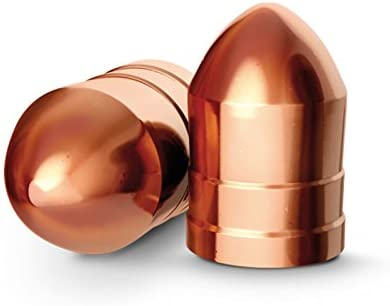

Our Categories

PCB Slug
PCB Slug bullets are bullets manufactured using high-density lesd-antimony alloys and offer higher kinetic energy and penetration properties.

Airgun Pellet
Airgun Pellet bullets are air gun bullets that provide high quality and accurate shooting and are specially designed for different types of air guns such as air rifles and pistols .

FCP
Copper-plated bullets consist of compact lead cores and a special thick coating. Bullets are also calibrated to achieve the highest possible performance.